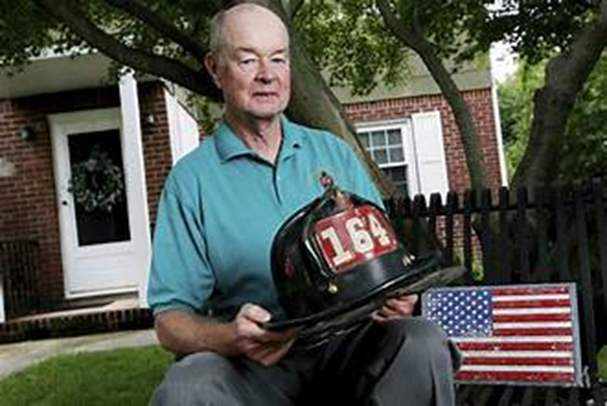

قضوة: بوب بيكويث
بوب بيكويث كان رجل إطفاء في مدينة نيويورك، وأصبح رمزًا مشهورًا بعد ظهوره في صورة مع الرئيس الأمريكي جورج بوش الابن فوق أنقاض مركز التجارة العالمي في موقع غراوند زيرو عقب هجمات 11 سبتمبر 2001.صورته مع الرئيس كانت تعبيرًا قويًا عن الشجاعة والصمود، وألهمت الكثيرين حول العالم.